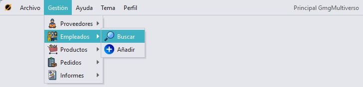
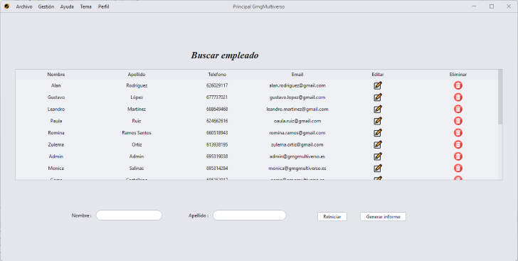
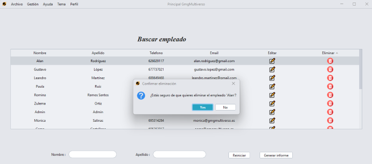
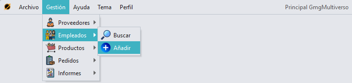
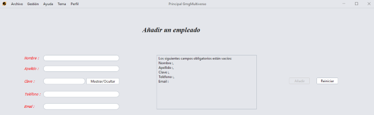

Buscar
un empleado
Para acceder a la sección de busqueda de un empleado, tenemos que
pulsar en la sección "Gestión" en el menú superior, pulsar "Empleados"
y luego "Buscar".

Observaremos una tabla y 2 elementos por los cuales podremos filtrar,
por nombre y apellido.
Además, se puede filtrar tanto por separado como en conjunto, es decir,
puedes filtrar solo por nombre o solo por apellido, o filtrar primero
por ejemplo por nombre y luego por apellido, te saldrá una búsqueda
conjunta.

Eliminar
/ Editar un empledo
Pulsando en la tabla el icono de una papelera, se
eliminará un empleado.

Para editar un empleado, solo tenemos que pulsar el icono de un lápiz para que se nos
cargue la opción de editar del empleado seleccionado.

Añadir
un empleado
Para acceder a la sección de añadir un empleado, tenemos que pulsar en
la sección "Gestión" en el menú superior, pulsar "Empleados" y luego
"Añadir".

Para poder añadir un empleado, hay que rellenar todos los campos
obligatorios.

GMG Multiverso